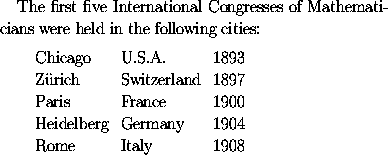
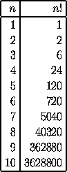
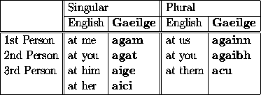

Tables can be produced in LaTeX using the tabular environment. For example, the text
is coded in LaTeX as follows:
The first five International Congresses of Mathematicians
were held in the following cities:
\begin{quote}
\begin{tabular}{lll}
Chicago&U.S.A.&1893\\
Z\"{u}rich&Switzerland&1897\\
Paris&France&1900\\
Heidelberg&Germany&1904\\
Rome&Italy&1908
\end{tabular}
\end{quote}
The \begin{tabular} command must be followed by a string
of characters enclosed within braces which specifies the format
of the table. In the above example, the string {lll} is a
format specification for a table with three columns of left-justified text.
Within the body of the table the ampersand character & is used
to separate columns of text within each row, and the double
backslash \\ is used to separate the rows of the table.
The next example shows how to obtain a table with vertical and horizontal lines. The table
is coded in LaTeX as follows:
\begin{tabular}{|r|r|}
\hline
$n$&$n!$\\
\hline
1&1\\
2&2\\
3&6\\
4&24\\
5&120\\
6&720\\
7&5040\\
8&40320\\
9&362880\\
10&3628800\\
\hline
\end{tabular}
In this example the format specification {|r|r|} after
\begin{tabular} specifies that the table should consist
of two columns of right-justified text, with vertical lines
to the left and to the right of the table, and between columns.
Within the body of the table, the command \hline produces
a horizontal line; this command can only be placed between the
format specification and the body of the table (to produce a line
along the top of the table) or immediately after a row separator
(to produce a horizontal line between rows or at the bottom of the
table).
In a tabular environment, the format specification after
\begin{tabular} should consist of one or more of the following,
enclosed within braces { and }:
lspecifies a column of left-justified text
cspecifies a column of centred text
rspecifies a column of right-justified text
p{width}specifies a left-justified column of the given width
|inserts a vertical line between columns
@{text}inserts the given text between columns
A string str of characters in the format specification can be
repeated num times using the construction
*{num}{str}.
For example, a table with 15 columns of right-justified text enclosed
within vertical lines can be produced using the format specification
{|*{15}{r|}}.
If additional vertical space is required between rows of the table,
then this can be produced by specifying the amount of space within
square brackets after \\. For example, one would use
\\[6pt] to separate two rows of the table by 6 points of
blank space.
A horizontal line in a table from column i to column j
inclusive can be produced using
\cline{i-j}.
For example \cline{3-5} produces a horizontal line
spanning columns 3, 4 and 5 of some table.
A command of the form
\multicolumn{num}{fmt}{text}
can be used within the body of a table to produce an entry spanning
several columns. Here num specifies the number of columns
to be spanned, fmt specifies the format for the entry
(e.g., l if the entry is to be left-justified entry,
or c if the entry is to be centred), and text is
the text of the entry.
Many of these features are used in typesetting the table
which is coded in LaTeX as follows:
\begin{tabular}{|l||l|l||l|l|}
\hline
&\multicolumn{2}{l|}{Singular}&\multicolumn{2}{l|}{Plural}\\
\cline{2-5}
&English&\textbf{Gaeilge}&English&\textbf{Gaeilge}\\
\hline\hline
1st Person&at me&\textbf{agam}&at us&\textbf{againn}\\
2nd Person&at you&\textbf{agat}&at you&\textbf{agaibh}\\
3rd Person&at him&\textbf{aige}&at them&\textbf{acu}\\
&at her&\textbf{aici}& & \\
\hline
\end{tabular}